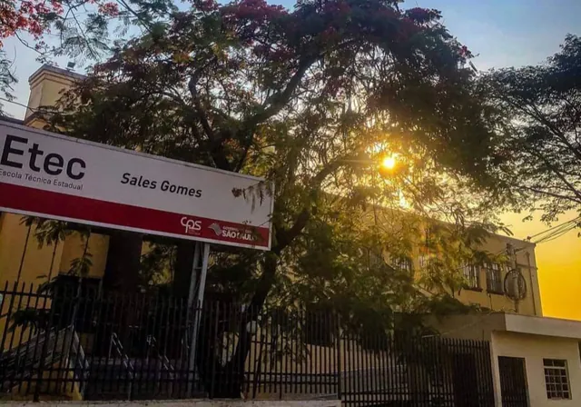

ETEC: escola técnica pública e gratuita
As Escolas Técnicas Estaduais (Etecs) oferecem ensino médio, ensino médio junto com um curso técnico e cursos técnicos, sem mensalidade. Para entrar, você faz o Vestibulinho, uma prova aplicada duas vezes por ano.

Resumo
- Quem mantém
- Centro Paula Souza, do Governo do Estado de São Paulo
- Quantas escolas
- 228 Etecs pelo estado (dezembro de 2025)
- Custo
- Gratuito; o Vestibulinho cobra taxa de inscrição
- A prova
- 50 questões de múltipla escolha, em 4 horas
- Quando
- Duas vezes por ano: no meio do ano (para o 2º semestre) e no fim do ano (para o 1º semestre)
Que cursos a ETEC oferece
- Ensino médio: o ensino médio regular, para quem termina o 9º ano.
- Ensino médio com técnico: o ensino médio junto com a formação técnica. Você termina a escola já com uma profissão.
- Cursos técnicos: para quem já terminou o ensino médio ou está pelo menos no 2º ano.
- Especialização técnica: para quem já tem um curso técnico na área e quer se aprofundar.
São mais de 200 cursos, em áreas como gestão e negócios e ambiente e saúde, além de cursos de artes. A lista muda a cada processo e depende da escola: confira no site do Vestibulinho, em cursos e unidades.
Como é o Vestibulinho
A prova tem 50 questões de múltipla escolha, cada uma com cinco alternativas (A a E), e dura 4 horas. As questões cobram o que se aprende no ensino fundamental e costumam misturar matérias em torno de um tema (na prova do 2º semestre de 2026, por exemplo, o tema foi “transporte”). Em algumas edições o número de questões e o tempo foram diferentes; no 1º semestre de 2023, foram 40 questões em 3 horas.
A nota é a soma dos acertos: cada questão certa vale 1 ponto. Questões anuladas valem ponto para todos. Cursos de artes, como canto, dança, regência e teatro, também têm uma prova de aptidão.
Pontuação acrescida
O Vestibulinho soma um bônus à nota de quem se encaixa nestes casos:
- +10% para quem cursou todo o ensino fundamental II (6º ao 9º ano) em escola pública;
- +3% para quem se declara afrodescendente;
- +13% para quem se encaixa nos dois casos.
Datas, taxa, isenção, regras de pontuação e documentos mudam a cada edição. A palavra final é sempre do Manual do Candidato publicado no site oficial.
Como treinar no Treineiros
Aqui estão as provas oficiais do Vestibulinho desde 2017, com o gabarito oficial, a correção comentada de cada questão e a pontuação no formato da ETEC, inclusive com a pontuação acrescida. No 2º semestre de 2020, em 2021 e no 1º semestre de 2022 não houve prova: por causa da pandemia, a seleção foi pela análise do histórico escolar.
Links oficiais
- Vestibulinho Etec: inscrições, Manual do Candidato, cursos e escolas.
- Calendário do Vestibulinho: datas de inscrição, prova e resultado.
- Dúvidas frequentes, respondidas pela organização.
- Centro Paula Souza: a instituição que mantém as Etecs e as Fatecs.